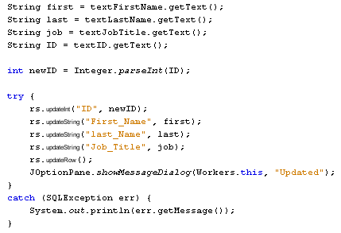

Learn Java- Complete Offline Beginners Guide
The ResultSet has Update methods that allow you to update records not only in the ResultSet itself, but in the underlying database. Let's see how it works.
Make your form a bit longer. Now add a new panel to the form. Add a new button to the panel. Change the default variable name to btnUpdateRecord. Change the text on the button to Update Record. We're also going to have buttons to create a new record in the database, to save a record, cancel any updates, and to delete a record. So add four more buttons to the panel. Make the following changes:
Button Variable Name: btnNewRecord
Button Text: New Record
Button Variable Name: btnDeleteRecord
Button Text: Delete Record
Button Variable Name: btnSaveRecord
Button Text: Save New Record
Button Variable Name: btnCancelNewRecord
Button Text: Cancel New Record
When you're done, your form should look something like this one (though feel free to rearrange the buttons):

Double click your Update button to create a code stub.
The first thing to do is get the text from the Text Fields:
String first = textFirstName.getText( );
String last = textLastName.getText( );
String job = textJobTitle.getText( );
String ID = textID.getText( );
If we want to update an ID field, however, we need to convert the String to an Integer:
int newID = Integer.parseInt( ID );
The Integer object has a method called parseInt. In between the round brackets of parseInt, you type the string that you're trying to convert.
Now that we have all the data from the Text Fields, we can call the relevant update methods of the ResultSet object:
rs.updateString( "First_Name", first );
There are quite a few different update methods to choose from. The one above uses updateString. But you need the field type from your database table here. We have three strings (First_Name, Last_Name, Job_Title) and one integer value (ID). So we need three updateString methods and one updateInt.
In between the round brackets of the update methods, you need the name of a column from your database (though this can be its Index value instead). After a comma you type the replacement data. So, in the example above, we want to update the First_Name column and replace it with the value held in the variable called first.
The update methods just update the ResultSet, however. To commit the changes to the database, you issue an updateRow command:
rs.updateRow( );
Here are all the lines of code to update the ResultSet and the database table:
try {
rs.updateInt( "ID", newID );
rs.updateString( "First_Name", first );
rs.updateString( "last_Name", last );
rs.updateString( "Job_Title", job );
rs.updateRow( );
JOptionPane.showMessageDialog(Workers.this, "Updated");
}
catch (SQLException err) {
System.out.println(err.getMessage() );
}
Again, we need to wrap it all up in a try … catch statement, just in case something goes wrong. Notice, too, that we've added a message box for a successful update.
Here's the entire code to add for your Update Button:

Run your programme and try it out. Change some data in a Text Field (Tommy to Timmy, for example). Then click your Update button. Scroll past the record then go back. The change should still be there. Now close down your programme and run it again. You should find that the changes are permanent.
In the next lesson, you'll see how to add a new record